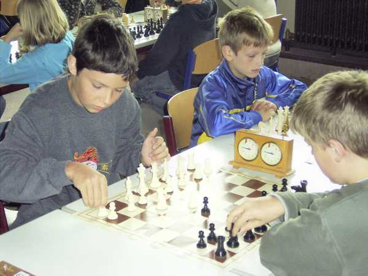
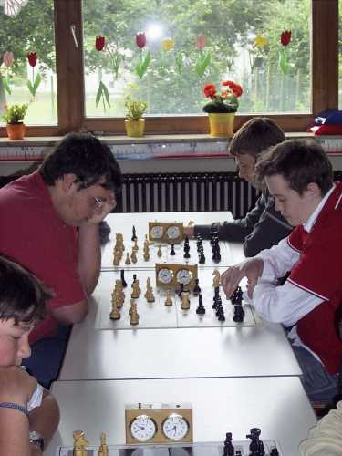
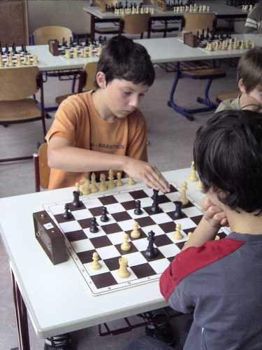
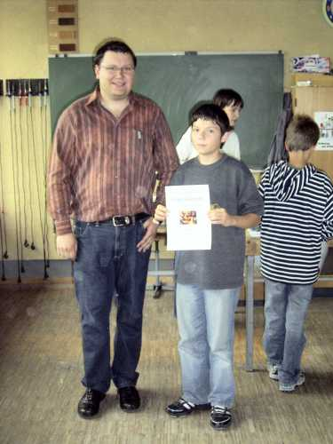

Daniel beim ersten Spiel in der U12

In der U16 gab es einige "Lokalderbys" -
hier Jochen gegen Tobias

Lukas hatte gleich zu Beginn einen schweren Gegner

Daniel holte aus den ersten 5 Spielen 4,5 Punkte,
aber dann liess er doch etwas nach...

Turnieratmosphäre im Raum U18/U16/U14

Lukas als stolzer Zweiter in der U14

Daniel reichte es am Schluss "nur" zu Platz 3 in der U12